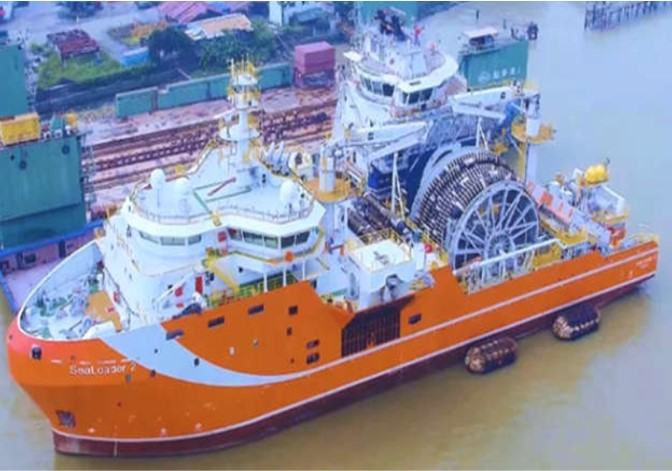
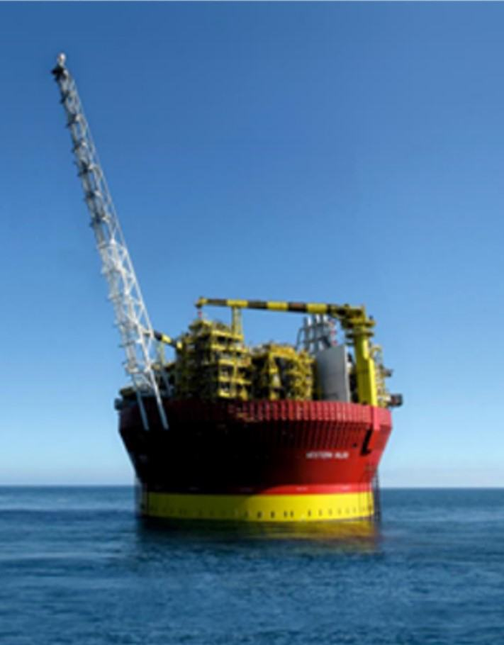
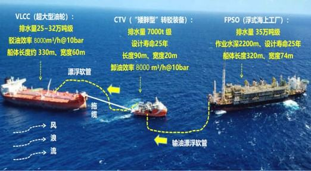

石油被誉为“工业血液”，远海深水区蕴藏着全球44%和我国南海80%的油气资源。深远海油气资源开发是国家战略，浮式生产储卸油船（FPSO）和原油转驳装备（CTV）是海油开发核心装备，如何将原油从FPSO直接转驳到超大型油轮（VLCC），而无需陆地储油库中转，一直是亟待解决的世界性难题。在国家工信部重点研发专项和国家自然科学基金等资助下，通过产学研用十多年的联合攻关，设计制造了全球首艘原油转驳装备/船（CTV）、首座圆筒形FPSO和首套“FPSO+CTV+VLCC”多浮体原油转驳系统。首次实现了将原油直接从FPSO转驳到VLCC，突破了离岸距离的限制，填补了国际空白，主要创新如下：
创新点1：提出一种无需船坞的在水上“分层制造，逐层叠加”直接制造巨型FPSO的浮态制造新方法，建立了水下旋转角度数学模型，发明了旋转角度可变的水下旋转工艺装置，形成了平台底层分段划分、扇形分段对接精度控制、逐层吊装重心控制等成套浮态制造工艺与技术，解决了船坞建造接触应力大易变形的技术难题。设计制造了世界首座圆筒型浮式生产储卸油船（FPSO），船平台主甲板直径78米，高60米，重2.8万吨，储油量40万桶。
创新点2：针对CTV整体空间狭小、管线密集、敞口式结构复杂、焊接容易变形等难点，建立了CTV复杂结构焊接变形力学模型，形成了肋板横舱壁等横向复杂构件的分段焊接变形补偿、船台合拢缝焊接变形补偿等成套工艺，解决了敞口式CTV焊接变形量大的技术难题。设计制造了世界首艘深远海原油转驳装备（CTV）：尺寸规格：长宽深89m× 20m×10m；排水量7000t。
创新点3：建立了风-浪-流耦合作用的柔性链接多浮体水动力运动数学模型，研发了基于实时监测风浪流及VLCC牵引力调整CTV主推进力及侧推力的多浮体动态定位系统。设计制造了世界首个“FPSO+CTV+VLCC”多浮体系统成套装备：7级风、流速≤1m/s、浪高≤4m，突破了远海复杂海况下将原油从FPSO直接转驳到VLCC的技术难题，原油转驳速度8000/h@10bar，比常规设备提升 50%。
授权发明专利36件，其中国际专利6件。获得中国专利奖金奖和中国发明协会创新成果奖一等奖1项。被列入国家工信部首台（套）重大装备推广应用目录。近三年新增高端装备销售额75.6亿元、新增利税7.1亿元、创汇9.9亿美元。世界首制2艘CTV已在我国权益区示范应用，在“一带一路”建设和国际能源合作国巴西水深2200 米的深海油田商业化应用，三年转驳的原油价值超1200亿美元。中央电视台、人民网、Ocean Engineering等国内外重要媒体和专业刊物纷纷报道。中央电视台报道：“中国国之重器，填补了国际空白”。国务院国资委评价：革命性简化了现有外输模式，带动了深海石油开发领域装备制造技术的发展。用户评价：历史上首次将原油直接从FPSO 转驳到VLCC。经院士专家技术鉴定委员会鉴定：“该项目成果具有自主知识产权，技术创新性强，项目成果总体技术达到国际先进水平，其中多浮体原油转驳装备技术处于国际领先水平”。成果已形成了显著的经济社会效益和国际影响力。
（一）背景与意义
石油不仅是国家能源安全的重要保障，更被誉为“工业血液”，是现代化的工业、农业、国防军事的重要战略物资。据欧佩克估计，全球海洋石油总储量达1400-2000亿吨，其中44%在远海深水区。我国南海油气资源极为丰富，已探明石油储量达300多亿吨，是国家未来石油安全的重要保障。但是，其中80%蕴藏于远离我国陆地的远海。例如，曾母暗沙盆地石油储量达150亿吨，能保障我国使用20多年，离我国陆地达1800km，至今尚未能开发。
浮式生产储油装置(FPSO，俗称海上采油平台) 对来自海底井筒的油/气/水等混合液加工成原油。通过小型穿梭油轮（ST）或者海底管道，将原油转驳到岸上储油库，然后再将储油库中的原油转驳超大型油轮（VLCC），并运往世界各地，这称为近海原油转驳技术，离岸作业距离约300km，不能满足远海油气田开发的需求。某些国家采用近海原油转驳技术，在我国曾母暗沙盆地等南海海域大肆盗采原油，根据报道：每年盗产原油超过5000万吨。
全球行业一直在寻求将FPSO上的原油直接转驳到VLCC的新技术，但尚无成功先例。如何将原油从FPSO直接转驳到VLCC，而无需陆地储油库中转，一直是亟待解决的世界性难题，更是制约我国南海油气资源开发的主要技术瓶颈之一。
在国家工信部重点研发专项、国家自然基金等资助下，产学研用深度融合，本项目设计并开发出“FPSO+原油转驳装备（CTV）”的远海原油转驳成套装备新技术，设计制造了全球首艘原油转驳装备/船（CTV）、首座圆筒形FPSO和首套“FPSO+CTV+VLCC”多浮体原油转驳系统。首次实现了将原油直接从FPSO转驳到VLCC，突破了离岸距离的限制，填补了国际空白。授权发明专利36件，其中国际专利6件。主要创新如下：
（二）主要设计创新
创新点1：提出一种无需船坞的在水上“分层制造，逐层叠加”直接制造巨型FPSO的浮态制造新方法，建立了水下旋转角度数学模型，发明了旋转角度可变的水下旋转工艺装置，形成了平台底层分段划分、扇形分段对接精度控制、逐层吊装重心控制等成套浮态制造工艺与技术，解决了船坞建造接触应力大易变形的技术难题。研制了世界首座圆筒型浮式海上油气生产储卸平台（FPSO），平台主甲板直径78 米，高60米，重2.8万吨，储油量40万桶。
所属学科：机械制造及自动化。旁证材料：授权发明专利 18件 、实用新型专利1件，其中核心发明专利：ZL201610680577.0（附件4.4）、ZL201610806143.0（附件4.5）、ZL201610808323.2（附件4.6）、ZL201610807932.6（附件4.7）。
FPSO属于小批量个性化产品，采用船坞或者船台建造时，由于FPSO平台重量重且底部面积小，导致船坞底部坞墩的接触应力大易变形，在服役中变形释放容易产生疲劳裂纹。其次，FPSO平台建造周期一般是4～6年，一个船坞仅仅容纳一个平台建造，利用率太低，成本高。针对上述难题，本项目提出了FPSO浮态模块化制造新方法，即：以水的浮力作为支撑，直接在水上“分层制造，逐层叠加”制造巨型FPSO的新方法。具体如下：
（1）首先利用小尺寸半潜驳甲板作为底层合拢平台，将圆形FPSO底层总段分为若干层，每层分为若干个扇形分段，对在半潜驳长度方向和宽度尺寸限度内的每个分段逐一吊装，然后进行焊接合拢，见图1（a）。（2）根据建立的水下旋转角度数学模型，半潜驳下沉，使层底漂浮在水面上，利用研发的旋转角度可变的水下旋转工艺装置将半潜驳原地旋转一定的角度，使层底宽度部分转为长度方向，见图1（b）；上浮，然后继续吊装合拢其余分段和底层总段。（3）半潜驳下沉，与底层分段脱离，以底层分段作为合拢平台，以水的浮力作为支撑，逐层分段吊装，直至建造完成整个FPSO平台，见图1（c）。形成了平台底层分段划分、扇形分段对接精度控制、逐层吊装重心控制等成套浮态制造工艺与技术，解决了船坞建造接触应力大易变形的技术难题。研制了世界首座圆筒型浮式海上油气生产储卸平台，总高近60 米（18 层楼高），见图1（d）。平台主甲板直径78 米，总重2.8 万吨；最大原油处理能力44000桶/天，最大天然气处理能力1130000m3/天，最大原油存储量40 万桶，极端恶劣海况下服役寿命20年。
(a)小半潜驳甲板上建造底层 (b)下潜旋转一定的角度 (c)浮在水面上逐层建造 （d）FPSO服役照片 图1：FPSO浮态建造新方法和世界首座圆筒形FPSO创新点2：针对CTV整体空间狭小、管线密集、结构形式复杂、焊接容易变形等难点，建立了CTV复杂结构焊接变形力学模型，提出了肋板横舱壁等横向复杂构件的分段焊接变形补偿、船台合拢缝焊接变形补偿。研制了世界首艘深远海原油转驳装备（CTV）：尺寸规格：长宽深89m×20m×10m；排水量7000t；功能：原油转驳、动力定位、油轮系泊牵引。
所属学科：机械制造及自动化。旁证材料：授权发明专利 17件、实用新型专利2件，其中核心发明专利：ZL201610586893.1（附件4.1）、ZL201610685324.2（附件4.2）、ZL 202111575067.4（附件4.3）。
图2:基于固有应变法和人工智能优化算法预测焊后复杂结构的变形量和残余应力创新点3：建立了风-浪-流耦合作用的柔性链接多浮体水动力运动数学模型，研发了基于实时监测风浪流及VLCC牵引力变化来调整CTV主推进力及侧推力的多浮体动态定位系统。研制了世界首个“FPSO+CTV+VLCC”多浮体系统成套装备：7级风、流速≤1m/s、浪高≤4m，突破了远海复杂海况下将原油从FPSO直接转驳到VLCC的技术难题，原油转驳速度 8000m3 /h@10bar，比常规设备提升 50%。
所属学科：机械工程。旁证材料：授权发明专利 11件、实用新型专利1件、软件著作权3项（附件4.11），其中核心发明专利：ZL202110182612.7（附件4.8）、ZL 20210182843.8（附件4.9）、ZL20211077094.9（附件4.10）。
由于CTV结构紧小，在恶劣海况下受到强烈摇晃。建立了风-浪-流耦合作用的柔性链接多浮体水动力运动数学模型（图3），研发了基于实时监测风浪流及VLCC牵引力变化来调整主推进力及侧推力的动态定位系统，并使其能够适应全球海域中不同的水文环境和工况。研制了世界首个“FPSO+CTV+VLCC”多浮体系统成套装备（图3）：在7级风、流速≤1m/s和浪高≤4m的海况下，稳定控制住了VLCC与FPSO之间作业距离为350-400m的恒定值，从而确保了转驳的安全性。原油转驳速度达 8000m3 /h@10bar，比常规设备提升 50%。
图3：多浮体建模和世界套“FPSO+CTV+VLCC”多浮体原油转驳系统

